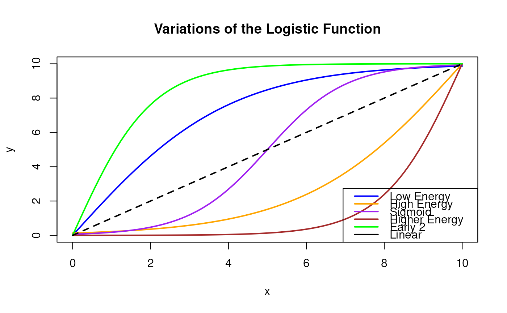

Logistic Function
logist.RdCalculates the logistic function value given parameters and input.
Examples
x_vals <- seq(0, 10, by = 0.1)
# Calculate the features for each scenario
features_low_energy <- logist(x_vals, x_0 = 0, L = 2, k = 0.5) - 1
features_high_energy <- logist(x_vals, x_0 = 10, L = 2, k = 0.5)
features_sigmoid <- logist(x_vals - 5, x_0 = 0, L = 1, k = 1)
features_higher_energy <- logist(x_vals, x_0 = 10, L = 2, k = 1)
features_early2 <- logist(x_vals, x_0 = 0, L = 2, k = 1) - 1
# Base plot setup
plot(x_vals, features_low_energy * 10,
type = "l", col = "blue",
main = "Variations of the Logistic Function",
xlab = "x", ylab = "y", ylim = c(0, 10), lwd = 2
)
# Adding other variations
lines(x_vals, features_high_energy * 10, col = "orange", lwd = 2)
lines(x_vals, features_sigmoid * 10, col = "purple", lwd = 2)
lines(x_vals, features_higher_energy * 10, col = "brown", lwd = 2)
lines(x_vals, features_early2 * 10, col = "green", lwd = 2)
lines(x_vals, x_vals, col = "black", lwd = 2, lty = 2)
legend("bottomright",
legend = c("Low Energy", "High Energy", "Sigmoid", "Higher Energy", "Early 2", "Linear"),
col = c("blue", "orange", "purple", "brown", "green", "black"),
lty = 1,
lwd = 2
)
